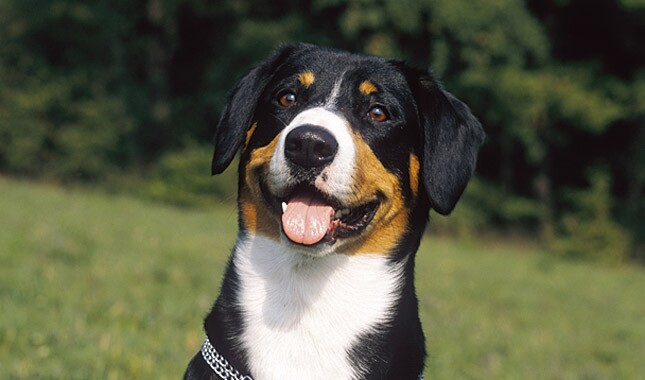

Entlebucher Mountain Dog

origin
Switzerland
size
Medium
color
Black
type
Purebred
breed group
Herding (AKC:2011), Guardian Dogs (UKC)
character
Hypoallergenic
temperament
Agile, Devoted, Independent, Loyal, Self-confidence
height
19-20 inches (48-51 cm)
weight
55-66 pounds (25-30 kg)
geography
Europe
overview
Swiss herders developed four breeds of mountain dog known for their striking tricolor coats. Of these, the Entlebucher (ENT-leh-boo-cur) Mountain Dog is the smallest and quickest. They’re muscular, long-backed cattle dogs with short, sturdy legs. They stand from 16 to 21 inches at the shoulder, with females at the lower end of the scale. Their dark eyes draw you into an attentive, friendly face. Bred to move cattle up and down sloping pastures, Entles are famous for agility, balance, and rugged determination.
They may be reserved with strangers. Entles are an active, high energy and physical breed, with above average exercise requirements, so they are not a dog for the casual owner. Entlebuchers do best when they have a job. Although the Entlebucher loves and is devoted to children, his shepherding instincts can make integrating small children and a puppy a bit tricky. The Young Entle can become possessive and begin to consider children to be “his own” to herd and watch over. Being exceptionally strong for his size, the Entle can easily overwhelm a child. Very careful consideration should be taken when considering adding this breed to a family with small children.
history
The Entlebucher (Entlebuch Mountain Dog/Entlebucher Cattle Dog) is the smallest of the four Swiss Sennenhund breeds. The crossing of the Roman Mastiffs with the local Swiss working dogs during the time of the Roman invasion of Europe resulted in the Sennenhunds: the Greater Swiss Mountain Dog, Appenzeller Sennenhund, Entlebucher and Bernese Mountain Dog. It is generally accepted that the Greater Swiss Mountain Dog was the first of these breeds, and the other three developed from it. The Entlebucher was primarily used by Alpine herdsmen to drive cattle.
Photo Gallery
